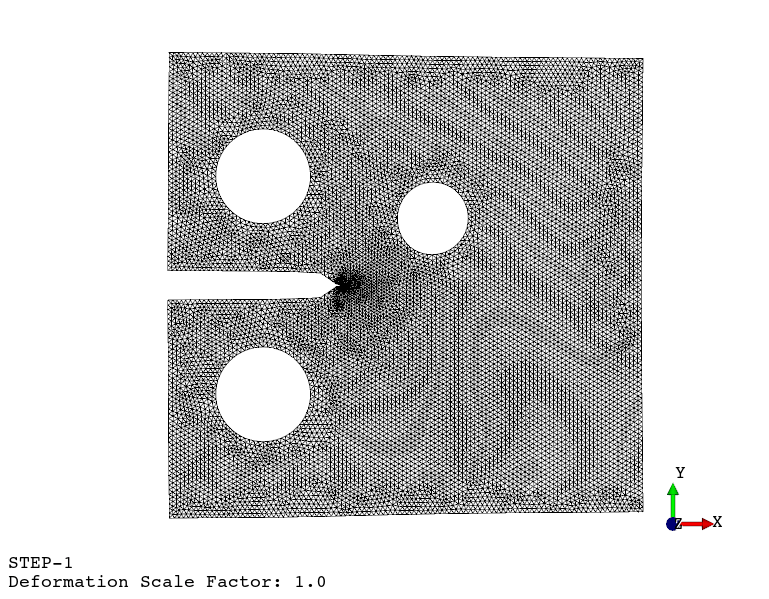
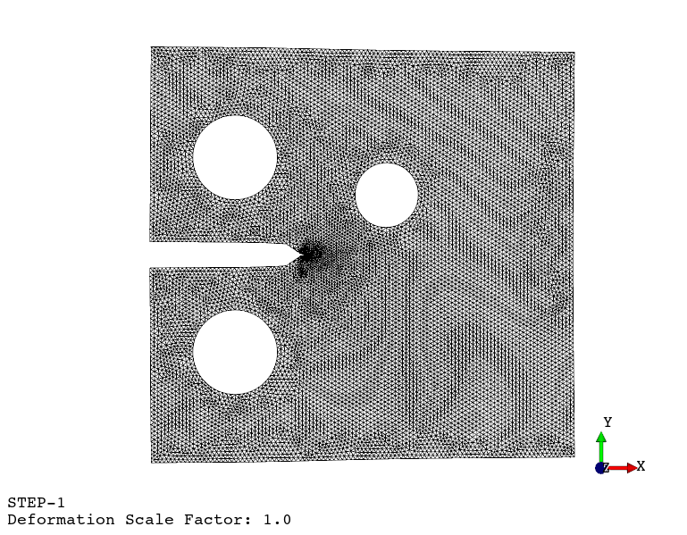

FEAPACK
A finite element analysis package for solids using Python.
Repository (GitHub) · License (GPL-3.0)
Copyright © 2024, Carlos Souto.
All rights reserved.
Installation and how-to guide
FEAPACK works with Python 3.12 (or later) on Windows x64. Installation via pip:
pip install feapackAccess the quick start guide with various examples here.
FEAPACK is easy to use
1. Generate a finite element mesh (manually or via third-party software)
2. Create and run a job script
import feapack.model
import feapack.solver
# main guard required for multiprocessing
if __name__ == '__main__':
# create model database (MDB)
mdb = feapack.model.MDB.fromFile('mesh.inp')
# create node sets
mdb.nodeSet(name='nodes at y = -55', indices=(node.index for node in mdb.mesh.nodes if node.y == -55.0))
mdb.nodeSet(name='nodes at y = 100', indices=(node.index for node in mdb.mesh.nodes if node.y == 100.0))
# create element set
mdb.elementSet(name='all elements', indices=range(mdb.mesh.elementCount))
# create surface set
mdb.surfaceSet(name='loaded surface', surfaceNodes='nodes at y = 100')
# create material and section
mdb.material(name='steel', young=210000.0, poisson=0.3)
mdb.section(name='steel section', region='all elements', material='steel', type=feapack.model.SectionTypes.General)
# create load and boundary condition
mdb.pressure(name='pressure', region='loaded surface', magnitude=5.0)
mdb.boundaryCondition(name='boundary', region='nodes at y = -55', u=0.0, v=0.0, w=0.0)
# solve
feapack.solver.solve(mdb, analysis='static', processes=4)
# run script with 'python job.py'
# launch viewer with 'python -m feapack.viewer' and open 'job.out'3. View results using the viewer application

4. Print the viewport or generate an animation

Implement your own algorithms
Fatigue crack propagation (see example here)
 

Available finite element types
from enum import Enum, unique
@unique
class ElementTypes(Enum):
"""Available finite element types."""
Line2 = 102
"""One-dimensional first-order interpolation element with 2 nodes."""
Line3 = 103
"""One-dimensional second-order interpolation element with 3 nodes."""
Plane3 = 203
"""Two-dimensional first-order interpolation element with 3 nodes."""
Plane4 = 204
"""Two-dimensional first-order interpolation element with 4 nodes."""
Plane6 = 206
"""Two-dimensional second-order interpolation element with 6 nodes."""
Plane8 = 208
"""Two-dimensional second-order interpolation element with 8 nodes."""
Volume4 = 304
"""Three-dimensional first-order interpolation element with 4 nodes."""
Volume6 = 306
"""Three-dimensional first-order interpolation element with 6 nodes."""
Volume8 = 308
"""Three-dimensional first-order interpolation element with 8 nodes."""
Volume10 = 310
"""Three-dimensional second-order interpolation element with 10 nodes."""
Volume15 = 315
"""Three-dimensional second-order interpolation element with 15 nodes."""
Volume20 = 320
"""Three-dimensional second-order interpolation element with 20 nodes."""